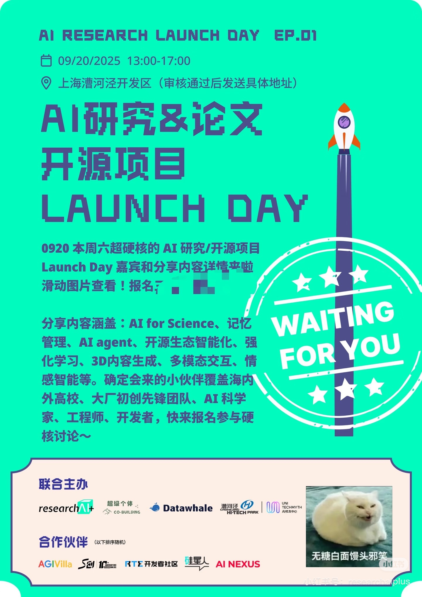
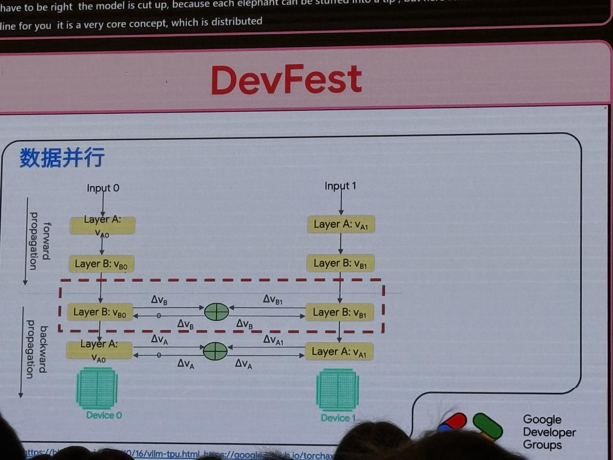
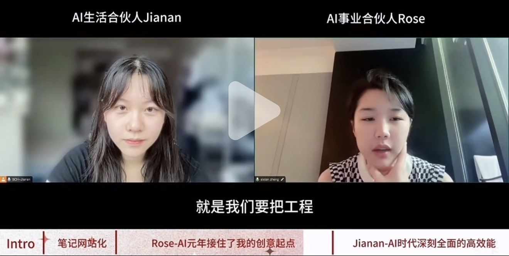
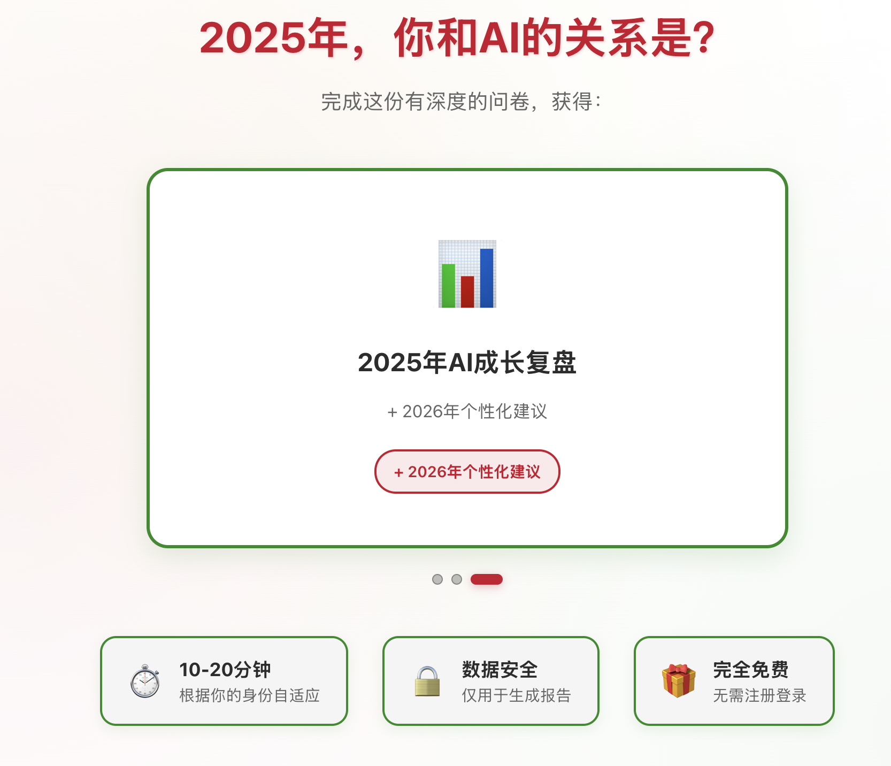
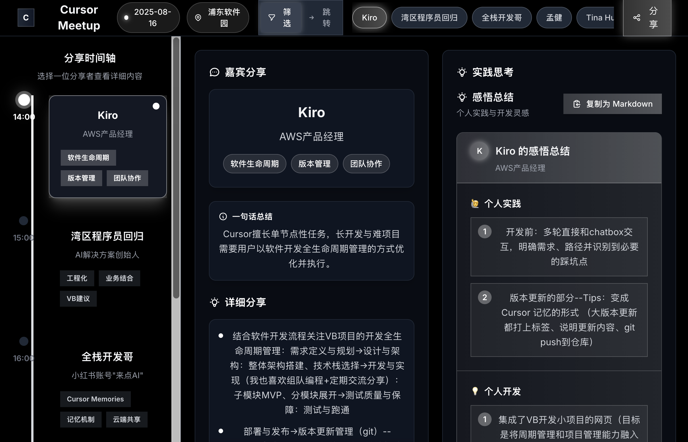

Best Practice 交流
线上实时分享 AI 最佳实践案例，沉淀为组织内可复用知识资产（热门工具解析/论文解析/工程实践经验）。
ONLINE / 公众号稿件乐创营并非单纯的兴趣社团，而是连接业务需求、内部技术能力与外部生态的三位一体枢纽。Core Team 扮演“浇灌者”与“修剪者”的双重角色——既要让知识在组织内自由流动，也要保持活动的质量与节奏感。对我而言，这是将 AI 工程实践、内容创作与跨部门协作整合为一体的理想场域。
线上实时分享 AI 最佳实践案例，沉淀为组织内可复用知识资产（热门工具解析/论文解析/工程实践经验）。
ONLINE / 公众号稿件
价值：经验从“口口相传”变成“可复制资产”，降低学习成本。
前期组织分享（X/Podcast/论文/公众号信息整合）；中期搭建自动化稿件 Agent；后期观测阅读数据趋势，捕捉员工层/战略层/管理层关注信息源。
AI AGENT / 公众号稿件
价值：形成“信息收集→加工→分发→复盘”的闭环能力。
对标 Google I/O 风格，定期汇聚内部 AI 实践成果，形成高密度知识输出节点。
KEYNOTE EVENT
价值：把个人成果转化为组织级影响力。
采访内部 AI 实践者，制作播客内容，建立有温度的知识传播渠道。
ONLINE / 公众号稿件 / PODCAST
价值：技术成果故事化，增强传播与连接。
定期组织 AI 副项目分享，激活个人创造力，构建跨部门创新连接。
SALON / 公众号稿件
价值：低成本试验，快速验证并沉淀方法论。
面向不同技能层级设计差异化培训内容，从工具使用到系统思维全覆盖。
TRAINING / 公众号稿件
价值：能力体系化复制，提升团队整体上限。
AI 观点辩论赛：联合 Young Pie，围绕 AI 时代热点议题展开讨论，引发关注与思考。（YOUNG PIE）
LeanClub 企业拜访：协同开展标杆企业参访，对接一线 AI 落地实践经验。（LEANCLUB）
校企合作项目：建立高校合作渠道，引入学术前沿视角，同时输送年轻创造力。（ACADEMIA）
官方 AI 主题竞赛（COMPETITION） / 高价值展会（Conference） / 创客松 Hackathon（HACKATHON） / 技能交流会（NETWORKING） / 主题开放麦（OPEN MIC）。
1. AI Agent 工程能力：具备完整 Agent 系统搭建经验（OpenClaw、R·Agent），可设计并落地「医疗热点稿件 Agent」等自动化内容工具，降低人工运营成本。
2. 内容创作 × 小红书实战：能将技术实践转化为大众可读叙事，为播客、稿件、社群传播提供稳定产出。
3. 跨部门 Product Owner 视角：横跨 QT / ISE / DTI / MP 协作经验，擅长需求拆解与优先级判断。
4. 个人 AI 生产力系统：自建多 Agent 个人效率系统（AWS + Discord + Airtable），可提供低成本高可用的运营工具底座。
5. 高质量信息源聚合与实践：信息吸收/学习/Agent框架研究/内容输出分享/活动组织协办/信息沉淀，经验回流。